품질경영기사 (2020-08-22 기출문제)
1과목: 실험계획법
1. 계수치 데이터 분석에서 기계(A)를 4수준 열처리 (B)는 3수준, 반복 r=100인 반복 있는 2요인 실험을 하였다. 실헌은 AiBj의 12개 조합에서하나의 조합조건을 랜덤 선택하여 100번 실험을 마치고, 다음으로 나머지 11개의 조합에서 또 하나를 선택하여 100번 실험하는 것으로, 모두 1200번 실험하여 분석하였다. 분산분석표를 보고 ㉠, ㉡에 적합한 값은?
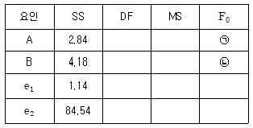
- ㉠: 4.983, ㉡: 11
- ㉠: 4.983, ㉡: 29.354
- ㉠: 13.301, ㉡: 11
- ㉠: 13.301, ㉡: 29.354
(정답률: 68%)

2. 다음 표는 수준의 조에 반복(r)이 2회 있는 2요인 실험한 결과이다. SAB는 얼마인가?
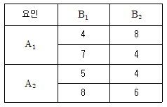
- 1.58
- 2.50
- 4.25
- 5.00
(정답률: 76%)
3. 지분실험법에 관한 설명으로 틀린 것은?
- 요인 A와 B는 확률변수이다.
- 요인 A와 B의 교호작용을 검출해 낼 수 있다.
- 일반적으로 변량요인에 대한 실험계획에 많이 사용된다.
- 요인 A, B가 변량요인인 지분실험법은 먼저요인 A의 수준이 정해진 후에 요인 B의 수준이 정해진다.
(정답률: 79%)
4. 32형 요인실험을 설명한 내용 중 틀린 것은?
- 2요인 3수준인 2요인 실험과 동일하다.
- 요인 A는 수준수가 3이므로, 자유도가 2가 된다.
- 처리조합은 00, 01, 02, 10, 11, 12, 20, 21, 22로 표현될 수 있다.
- 만약 요인 A가 계수요인이고, 수준가격이 일정하면, 요인 A의 일차효과와 이차효과의 존재여부를 찾아볼 수 있다.
(정답률: 66%)
5. 일반적으로 오차(eij)는 정규분포 N(0,
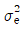
)으로부터 확률추출 된 것이라고 가정한다. 이 가정이 의미하는 것이 아닌 것은?- 정규성(normality)
- 독립성(independence)
- 불편성(unbiasedness)
- 최소분산성(minimum variance)
(정답률: 78%)
6. 요인 A는 3수준, 요인 B는 4수준, 요인 C는 2수준으로 택하고, 수준의 조합에 반복이 없는 3요인 실험에서 분산분석표를 작성하여 다음의 데이터를 얻었다. SA×B는 얼마인가?
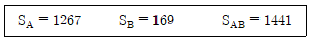
- 5
- 10
- 15
- 20
(정답률: 86%)
7. 다구찌 실험계획법에서 사용되는 파라미터 설계에서 파라미터(parameter)는 무엇을 의미하는가?
- 변수의 계수(coefficienet)를 의미한다.
- 망목, 망대, 망소를 나타내는 특성치를 의미한다.
- 제어 가능한 요인(controllable factor)를 의미한다.
- 요인가 취할 수 있는 값의 범위(range)를 의미한다.
(정답률: 68%)
8. 어떤 정유정제공정에서 장치(A)가 4대, 원료(B)가 4종류, 부원료(C)가 4종류, 혼합시간(D)가 4종류인데 이것으로 4×4 그레코라틴방격법 실험을 실시하여 다음 데이터를 얻었다. 총 제곱함 ST는 얼마인가?
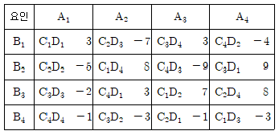
- 31.5
- 271.8
- 470.0
- 477.8
(정답률: 63%)
9. 다음은 L4(23)의 직교배열표를 나타낸 것으로 이에 대한 설명 중 틀린 것은?
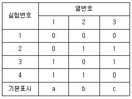
- 1군은 1열, 2군은 2, 3 열을 나타낸다.
- 한 열도 하나의 자유도를 갖고, 총 자유도의 수는 열의 수와 같다.
- 기본표시는 1열과 2열을 곱한 후 modulus 2로 3열이 만들어진다.
- 각 열을 (0, 1). (1, 2), (-1, 1), (-, +) 등으로 표시하기로 한다.
(정답률: 62%)
10. 다음 표는 1요인 실험에 의해 얻어진 특성치이다. F0값과 F분포의 자유도는 얼마인가?
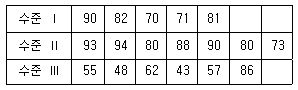
- 10.42, (2, 15)
- 10.42, (3, 14)
- 11.52, (14, 2)
- 11.52, (15, 3)
(정답률: 74%)
11. 1요인 실험 단순회귀 분산분석표를 작성하여 ST=35.27, SR=33.07, Se=1.98이라는 결과를 얻었다. 이 때 나머지(고차) 회귀의 제곱합 Sr은 얼마인가?
- 0.022
- 0.22
- 2.2
- 2.46
(정답률: 75%)
12. 어떤 부품에 대해서 다수의 로트에서 랜덤하게 3로트(A1, A2, A3)를 골라, 각 로트에서 또한 랜덤하게 4개씩을 임의 추출하여 그 치수를 측정한 데이터의 문석방법으로 맞는 것은?
- 닌괴법
- 라틴방격법
- 1요인 실험 변량모형
- 1요인 실험 모수모형
(정답률: 44%)
13. L27(313)형 직교배열표의 실험에서 A, B, C, A, E와 B×C의 교호작용이 있을 때 오차항의 자유도는?
- 8
- 10
- 12
- 14
(정답률: 54%)
14. 모수요인 A(ℓ 수준), B(m 수준)는 랜덤화가 곤란하고 모수요인 C(n 수준)는 앤덤화가 용이하여, 요인 A, B를 일차단위에 배치하고, 요인 C를 이차단위로 하여 실험하였다. 일차단위가 2요인 실험인 잔일분할법에서 자유도의 계산식으로 틀린 것은?
- ve1=(ℓ-1)(m-1)
- ve2=ℓ(m-1)(n-1)
- vA×C=(ℓ-1)(n-1)
- vB×C=(m-1)(n-1)
(정답률: 74%)
15. 필요한 요인에 대해서만 정보를 얻기 위해서 실험의 횟수를 가급적 적게 하고자 할 경우 대단히 편리한 실험이지만, 고차의 교호작용은 거의 존재하지 않는다는 가정을 만족시켜야하는 실험계획법은?
- 교락법
- 난괴법
- 분할법
- 일부실시법
(정답률: 67%)
16. 실험계획법에 관련돤 설명으로 맞는 것은?
- 1요인 실험의 ANOVA에 대한 가설검정의 귀무가설은
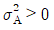
이다. - 오차항에서 가정되는 4가지 특성은 정규성, 독립성, 불편성, 랜덤성이 있다.
- 자유도는 제곱을 한 편차의 개수에서 편차들의 선형 제약조건의 개수를 뺸 것과 같다.
- 자유도는준 i에서의 모평균 μi가 전체의 모평균 μ로부터 어느 정도의 치우침을 가지는가를 나타내는 변수이다.
(정답률: 47%)
17. 난괴법애 관한 설명으로 틀린 것은?
- 1요인은 무수이고, 1요인은 변량인 반복이 없는 2요인 실험이다.
- 일반적으로 실험배치의 랜덤에 제약이 있는 경우에 몇 단계로 나누어 설계하는 방법이다.
- 실험설계 시 실험환경을 균일하게 하여 블록간에 차이가 없을 때, 오차항에 풀링하면, ㅂ요인 실험과 동일하다.
- 일반적으로 1요인 실험으로 단순반복 실험을 하는 것보다 반복을 블록으로 나누어 2요인 실험하는 경우, 층별아 잘되면 정보량이 많아진다.
(정답률: 40%)
18. 23형 요인배치법에서 다음과 같이 2개의 블록(block)으로 나누어 실험하고 싶다. 블로과 교락하고 있는 교호작용은?
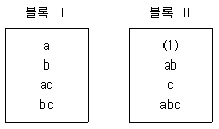
- A×B
- A×C
- B×C
- A×B×C
(정답률: 72%)
19. 반복이 없는 2요인 실험에서 A(모수)요인이 5수준, B(모수)요인이 6수준일 경우, AiBj 조합에서 유효반복수(ne)는?
- 1
- 2
- 3
- 4
(정답률: 73%)
20. 직교분해(orthogonal decomposition)에 대한 설명으로 틀린 것은?
- 직교분해된 제곱합은 어느 것이나 자유도가 1이 된다.
- 어떤 제곱합을 직교분해하면 어떤 대비의 제곱합이 큰 부분을 차지하고 있는가를 알 수 있다.
- 두 개 데비의 계수 곱의 합, 즉 c1c′1+c2c′2+…+cℓc′ℓ=0이면, 두 개의 대비는 서로 직교한다.
- 어떤 요인의 수준수가 ℓ인 경우 이 요인의 제곱합을 직교분해하면, ℓ개의 직교하는 대비의 제곱합을 구할 수 있다.
(정답률: 37%)
2과목: 통계적품질관리
21. 계수형 샘플링검사 절차 - 제1부 : 로트별합격품질한계(AQL) 지표형 샘플링검사 방식(KS Q ISO 2859-1 : 2014)에서 분수 합격판정개수의 샘플링 방식에 관한 설명으로 틀린 것은?
- 소관권한자가 인정하는 경우만 가능하다.
- 샘플 중에 부적합품이 전혀 없을 때에는 로트를 합격으로 한다.
- 샘플링 방식이 일정하지 않은 경우 합격판정점수가 5이하이면 Ac=0으로 하여 판정한다.
- 합격판정개수가 1/2인 검사로트에서 부적합품이 1개 발견되는 경우, 충분한 수의 직전 로트에서의 샘플 중에 부적합품이 전혀 없을 때에만 현재의 로트를 합격으로 간주해야 한다.
(정답률: 52%)
22. 정밀더의 정의를 뜻하는 내용으로 맞는 것은?
- 데이터 분포 폭의 크기
- 참값과 측정 데이터의 차
- 데이터 분포의 평균치와 참값과의 차
- 데이터의측정 시스템을 신뢰할 수 있는가 없는가의 문제
(정답률: 44%)
23. 갑, 을 2개의 주사위를 굴렸을 때, 적어도 한쪽에 홀수의 눈이 나타날 확률은?
- 1/4
- 1/2
- 2/3
- 3/4
(정답률: 66%)
24.  관리도로부터 층의 평균치 차이를 검정을 할 때, 사용하는 최소유의차에 대한 식이 다음과 같다. 이 식을 사용하기 위한 전체조건으로 틀린 것은?
관리도로부터 층의 평균치 차이를 검정을 할 때, 사용하는 최소유의차에 대한 식이 다음과 같다. 이 식을 사용하기 위한 전체조건으로 틀린 것은?
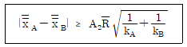
(단,
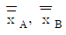
는 각각의 관리도의 중심선이며, kA, kB는 각각의 부분군의 수이다.)
관리도의 중심선이며, kA, kB는 각각의 부분군의 수이다.)- 두 관리도의 분산은 같지 않아도 된다.
- 두 관리도가 모두 관리상태이어야 한다.
- 두 관리도의 표본의 크기가 같아야 한다.
- 두 관리도의 부분군의 수는 다를 수 있다.
(정답률: 49%)
25. 검사가 행해지는 공정에 의한 분류에 속하지 않는 것은?
- 수입검사
- 공정검사
- 출하검사
- 순회검사
(정답률: 58%)
26. 계수형 샘플링 검사의 OC 곡선에 관한 설명으로 틀린 것은? (단, 로트의 크기는 시료의 크기에 비해 충분히 크다.)
- 부적합품률의 변화에 따라 합격되는 정도를 나타낸 곡선이다.
- 로트의 크기와 샘플의 크기, 합격판정개수를 알면 그에 맞는 독특한 OC 곡선이 정해진다.
- 샘플의 크기와 합격판정개수가 일정할 때 로트의 크기가 변하면 OC 곡선에 크게 영얄을 준다.
- 부적합품률이 P일 때, 초기하분포, 이항분포, 푸아송분포 중에 하나를 사용하여 로트의 합격확률 L(P)를 구한다.
(정답률: 64%)
27. 계수치 축차샘플링 검사 방식(KS Q ISO 8422)에서 합격판정치를 구하는 식으로 맞는 것은?
- -hA+gncum
- gnt-1
- -hR+gncum
- gnt+1
(정답률: 65%)
28.
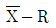
관리도의 운용에서 관리도는 아무 이상이 없으나 R관리도의 타점이 관리한계 밖으로 벗어났을 때 판정으로 가장 타당한 것은?
관리도는 아무 이상이 없으나 R관리도의 타점이 관리한계 밖으로 벗어났을 때 판정으로 가장 타당한 것은?- 공정산포에 변화가 일어났을 가능성이 높다.
- 공정평균에 변화가 일어났을 가능성이 높다.
- 공정평균과 공정산포에 모두 변화가 일어났을 가능성이 높다.
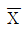
관리도는 이상이 없으므로 공정의 변화가 발생하지 않은 것으로 간주할 수 있다.
(정답률: 65%)
29. 100V 짜리 백열전구의 수명분포는 μ=500시간, σ=75시간인 정규분포에 따른다고 할 떄, 이미 500시간 사용한 전구를 앞으로 75시간 이상 더 사용할 수 있을 확률은 약 얼마인가?
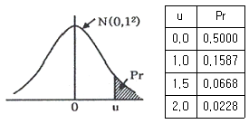
- 0.2440
- 0.3174
- 0.5834
- 0.8413
(정답률: 37%)
30. 두 변수 x와 y사이의 선형 관계를 규명하고자 데이터를 수집한 결과가 다음과 같을 때, y에 대한 x의 회귀식으로 맞는 것은?
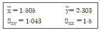
- y=0.695, x-0.307
- y=0.695, x+1.257
- y=0.787, x-0.307
- y=0.787, x+1.257
(정답률: 61%)
31. K사에서 판매하는 커피 자동판매기가 1번에 배출하는 커피의 양은 평균 μ, 표준편차 1.0cm3인 정규분포를 따른다. 배출되는 커피량이 120cm3이상이 될 확률이 95%이상이 되도록 하기 위해서는 평균을 약 cm3로 하여야 하는가?
- 118.355
- 120.000
- 121.645
- 123.290
(정답률: 44%)
32. 다변량 관리도(multi variate control chart)에서 다루는 품질변동이 아닌 것은?
- 위치변동
- 주기변동
- 시간변동
- 산포변동
(정답률: 38%)
33. 통계적 가설검정에 대한 설명으로 맞는 것은?
- 기각역이 커질수록 제2종 오류는 증가한다.
- 제1종 오류가 결정되면 기각역을 결정할 수 있다.
- 표본의 크기가 커지면 제2종 오류는 증가한다.
- 제1종 오류가 결정되면 표본의 크기를 결정할 수 있다.
(정답률: 52%)
34. A회사와 B회사 제품의 로트로부터 각각 12개 및 10개 제품을 추출하여 순도를 측정한 결과 ∑xA=1145.7, ∑xB=947.2일 때 두 회사 제품의 모평균늬 차에 대한 신뢰구간은 약 얼마인가? (단, σA=0.3, σB=0.2이며, 신뢰수준은 95%로 한다.)
- 0.54 ~ 0.79
- 0.54 ~ 0.97
- 0.66 ~ 0.79
- 0.66 ~ 0.97
(정답률: 47%)
35. 제2종의 오류를 적게 하고자 해서 관리한계를 3σ에서 1.96σ으로 하면, 제1종의오류를 일으키는 확률은 0.3%에서 어떻게 되는가?
- 변하지 않는다.
- 3%로 변한다.
- 5%로 변한다.
- 10%로 변한다.
(정답률: 57%)
36. 정규분포를 따르는 모집단에서 10개의 제품을 뽑아서 두께를 측정한 결과 다음과 같은 자료를 얻었다. 제품 두께의 모분산(σ2)에 대한 90% 신뢰구간은 약 얼마인가? (단,
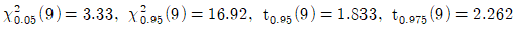
이다.)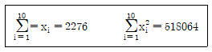
- 2.74 ≤ σ2 ≤ 13.93
- 2.74 ≤ σ2 ≤ 15.48
- 3.04 ≤ σ2 ≤ 13.93
- 3.04 ≤ σ2 ≤ 15.48
(정답률: 39%)
37. 계수 및 계량 규준형 1회 샘플링 검사(KS Q 0001:2013)에서 계량 규준형 1회 샘플링검사 중 로트의 부적합품률을 보증하는 경우 규정상한(U)을 주고 표본의 크기 n과 상한합격판정치  에 대한 설며응로 틀린 것은?
에 대한 설며응로 틀린 것은?
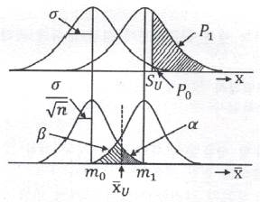
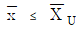
이면 로트는 합격이다.- m1-m0=(Kp0-Kp1)σ/√n로 표시된다.
- 사선 친 α=0.⑤, β=0.1의 사이에
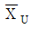
가 존재한다. - m1의 평균을 가지는 분포의 로트로부터 표본 n개를 뽑았을 경우
 에 대하여 로트가 합격할 확률을 β이다.
에 대하여 로트가 합격할 확률을 β이다.
(정답률: 44%)
38. 결혼 후 두 자녀 이상 갖기를 원하는 부부들의 선호도에 관한 설문을 하기 위해 미혼 남성 200명, 미혼여성 100명을 대상으로 그 선호도를 조사하였다. 그 결과 미혼남성 중 50명이, 미혼 여성 중 10명이 두 자녀 이상을 갖기를 원하였다. 두 자녀 이상 갖기를 원하였다. 주 자녀 이상 갖기를 원하는 남성과 여성의 비율의 차에 대한 90% 신뢰구간에 대한 신뢰상한값은 약 얼마인가? (단, u0.10=1.285, u0.⑤=1.645이다.)
- 0.080
- 0.150
- 0.2⑤
- 0.221
(정답률: 34%)
39. np 관리도에 관한 설명으로 틀린 것은?
- 시료의 크기는 반드시 일정해야 한다.
- 관리항목으로 부적합품의 개수를 취급하는 경우에 사용한다.
- 부적합품의 수, 1급 품의 수 등 특정한 것의 개수에도 사용할 수 있다.
- p 관리도보다 계산이 쉽지만, 표현이 구체적이지 못해 작업자가 이해하기 어렵다.
(정답률: 50%)
40. 전체 학생들의 성적이 정규분포흫 따르는지 적합도 검정을 활용하여 검정하고자 할 때, 검정 절차 중 가장 거리가 먼 것은?
- 귀무가설은 정규분포라고 가정한다.
- 검정통계량은 카이제곱분포를 이용한다.
- 각각의 분류한 급에 대한 기대 기대빈도수는 카이제곱분포로 계산한다.
- 자유도는 조사한 데이터를 급으로 분류할 때, 급의 수보다 1이 적다.
(정답률: 37%)
3과목: 생산시스템
41. 테일러 시스템과 포드 시스템에 관한 특징이 올바르게 짝지어진 것은?
- 테일러 시스템 - 직능식 조직
- 포드 시스템 - 기초적 시간 연구
- 포드 시스템 - 차별적 성과급제
- 테일러 시스템 - 저가격, 고임금의 윈칙
(정답률: 54%)
42. 표준시간을 계산하는데 쓰이는 MTM법에 관한 설명으로 틀린 것은?
- 목적물의 중량이나 저항을 고려해야 한다.
- 기본동작에 reach, grasp, release, move 등이 포함되어 있다.
- MTM 시간치는 정상적인 작업자가 평균적인 기술과 노략으로 작업할 때의 값이다.
- 작업대상이 되는 목적물이나 목적지의 상태에는 관계없이 표준시간을 알 수 있다.
(정답률: 49%)
43. JIT 시스템에서 생산준비사간의 축소와 소로트화에 대한 설명으로 틀린 것은?
- 소로트화는 회차당 생산량을 가능한 최소화하는 것을 뜻한다.
- JIT 시스 템에서는 평준화 생산방식으로 소로트 생산방식을 실현하고 있다.
- 생산준비시간의 축소는 준비교체 횟수를 감소시켜 실현하는 것을 목적으로 한다.
- 생산준비시간을 고정된 개념으로 보지 않고 소로트화로 생산중준비시간을 단축하려 한다.
(정답률: 56%)
44. 다중(복합)활동분석표에 해당하지 않는 것은?
- 복수기계분석표
- 복수작업자분석표
- 작업자 - 기계작업분석표
- 복수작업자 - 기계작업분석표
(정답률: 41%)
45. 보전자재의 연간 수요량은 50개, 1회당 발주비용은 1000원이고, 이 자재 1개당 재고유지비용이 20원일 때 경제적 발주량은?
- 29개
- 50개
- 71개
- 99개
(정답률: 41%)
46. LOB(Line of Balance)에 대한 설명으로 맞는 것은?
- 라인을 불균형화하기 위한 기법이다.
- 대규모 일시 프로젝트의 일정계획에 사용된다.
- 여러 개의 구성품을 포함하고 있는 제작, 조립 공정의 일정통제를 위한 기법이다.
- 작업장의 투입과 산출간의 관계를 관리함으로써 생산을 통제하는 기법이다.
(정답률: 31%)
47. 설비종합효율의 계산식으로 맞는 것은?
- 시간가동률 × 속도가동률 × 양품률
- 시간가동률 × 실질가동률 × 양품률
- 시간가동률 × 성능가동률 × 양품률
- 시간가동률 × 속도가동률 × 실질가동률
(정답률: 57%)
48. 일반적으로 기업들이 아웃소싱을 하는 이유에 대한 설명으로 가장 거리가 먼 것은?
- 자본부족을 보강하기 위한 아웃소싱
- 생산능력의 탄력성을 위한 아웃소싱
- 기술부족을 조강하기 위한 아웃소싱
- 경영정보를 공유하기 위한 아웃소싱
(정답률: 57%)
49. 시계열분석에 의한 수요예측 모형에서 승법모델의 식으로 맞는 것은? (단, 추세변동은 T, 순환변동은 C, 계절변동은 S, 불규칙변동은 I, 판매량은 Y이다.)
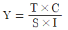
- Y=T×C×S×I
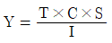
- Y=(T×C)-(S×I)
(정답률: 59%)
50. 일정계획의 개념에서 기준일정의 구성에 속하지 않는 것은?
- 저장시간
- 여유시간
- 정체시간
- 가공시간(작업시간)
(정답률: 47%)
51. 각 제품의 매출액과 한계이익률이 다음과 같을 때 평균 한계이익률을 사용한 손익분기점은? (단, 고정비는 1300만원이다.)
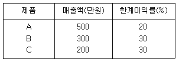
- 4600만원
- 4800만원
- 5000만원
- 5200만원
(정답률: 44%)
52. 설비의 일생(Life-cycle)을 통하여 설비자체의 비용과 보전 등 설비의 운전과 유지에 드는 일체의 비용과 설비열화에 의한 손실과의 합을 저하시킴으로서 생산성을 높이는 것과 관련이 없는 것은?
- 가치관리
- 생산보전
- 설비보전
- 예방보전
(정답률: 44%)
53. MRP 시스템의 특징으로 맞는 것은?
- 독립수요
- 종속품목수요
- 재발주점을 이용한 발주
- 자재흐름은 끌어당기기 시스템
(정답률: 46%)
54. 학습곡선(공수체감곡선)의 활용 분야에 해당하지 않는 것은?
- 작업자 안전
- 성과급 결정
- 제품아너 부품의 적정 구입가격 결정
- 작업로트 크기에 따라 표준공수 조정
(정답률: 37%)
55. 작업자 공정분석에 관한 설명으로 틀린 것은?
- 창고, 보전계의 업무와 경로 개선에 적용된다.
- 제품과 부품의 개선 및 설계를 위한 분석이다.
- 기계와 작업자 공정의 관계를 분석하는 데 편리하다.
- 이동하면서 작업하는 작업자의 작업위치, 작업순서, 작업동작 개선을 위한 분석이다.
(정답률: 61%)
56. 제조 활동과 서비스 활동의 차이에 대한 설명으로 틀린 것은?
- 서비스 활동에 비해 제조 활동은 품질의 측정이 용이하다.
- 제조 활동의 제품은 재고로 저장이 가능한 반면 서비스 활동은 저장할 수 없다.
- 제조 활돌의 산출물은 유형의 제품이고, 서비스 활동의 산출물은 무형의 서비스이다.
- 제조 활동은 생산과 소비가 동시에 행해지고, 서비스 활동은 생산과 소비가 별도로 행해진다.
(정답률: 64%)
57. 기업의 목적을 효율적으로 달성하기 위하여 자신의 능력으로 핵심부분에 집중하고 조직내부 활동이나 기능의 일부를 외부조직 또는 외부 기업체에 전문용역을 활용하여 처리하는 경영기법을 의미하는 용어는?
- Loading
- Outsourcing
- Debugigng
- Cross docking
(정답률: 66%)
58. 다음은 공정 Ⅰ을 먼저 거친 후 공정 Ⅱ를 거치는 3개의 작업에 대한 처리시간이다. 존슨법칙에의 의한 최적작업순서는?
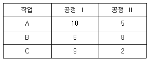
- A → B → C
- C → B → A
- B → A → C
- C → A → B
(정답률: 46%)
59. 설비 선정 시 주문생산에서와 같이 제품별 생산량이 적고, 제품설계의 변동이 심할 경우 설치가 유리한 기계설비는?
- SLP
- 범용기계
- MAPI
- 전용기계
(정답률: 57%)
60. 변동하는 수요에 대응하여 생산율ㆍ재고수준ㆍ고용수준ㆍ하청 등의 관리가능변수를 최적으로 결합하기 위하나 용도로 수립되는 계획은?
- 소일정계획(detail seheduling)
- 대일정계획(master seheduling)
- 주일정계획(master production seheduling)
- 총괄생산계획(aggregate production planning)
(정답률: 64%)
4과목: 신뢰성관리
61. 샘플수가 10개이고, 고장순번이 4일 때, 메디안 순위법을 적용하면 불신뢰도는 약 얼마인가?
- 0.0356
- 0.0385
- 0.3558
- 0.3850
(정답률: 48%)
62. λ0=0.001/시간, λ1=0.0⑤/시간, β=0.1, α=0.⑤로 하는 신뢰성 계수축차 샘플링 검사의 합격선은? (단, 수식 계산 시 소수점 이하는 반올림 하시오.)
- TA=402r+563
- Ta=563r+402
- Ta=420r+563
- Ta=563r+420
(정답률: 31%)
63. 일정한 시점 t까지의 잔존확률을 뜻하는 신뢰성 척도는 무엇인가? (단, R(t)는 신뢰도, F(t)는 불신뢰도, f(t)는 고장밀도함수, λ(t)는 고장률함수이다.)
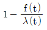
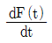
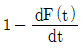
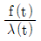
(정답률: 37%)
64. A형관등의 고장확률밀도함수는 평균고정률이 5×10-3/시간인 지수분포를 따르고 있다. 이 형광등 100개를 200시간 사용하였을 경우 기대 누적고장개수는 약 몇 개인가?
- 36개
- 50개
- 64개
- 100개
(정답률: 40%)
65. 고장시간과 수리시간이 각각 모수 λ와 μ로 지수분포를 따르고, 고장률 λ=0.⑤/시간, 수리율 μ=0.6/시간 일 때 가용도는 약 얼마인가?
- 0.021
- 0.077
- 0.923
- 0.977
(정답률: 54%)
66. 와이블(Weibull) 확률지를 이용한 신뢰성 척도 추정방법의 설명 중 틀린 것은? (단, t는 시간이고 F(t)는 t의 분포함수이다.)
- 평균수명은
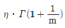
으로 추정한다. - 모분산
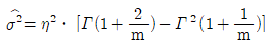
으로 추정한다. - 와이블(Weibull) 확률지의 X 축의 값은 t, Y축의 값은 ln(ln{1-F(t)})이다.
- 특성수명 η의 추정값은 타점의 직선이 F(t)=63%인 선과 만나는 점의 t눈금을 잃으면 된다.
(정답률: 62%)
67. 다음 FMEA의 절차를 순서대로 나열한 것은?
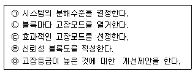
- ㉠ - ㉡ - ㉢ - ㉣ - ㉤
- ㉢ - ㉤ - ㉠ - ㉣ - ㉡
- ㉣ - ㉤ - ㉡ - ㉠ - ㉢
- ㉠ - ㉣ - ㉡ - ㉢ - ㉤
(정답률: 51%)
68. n개의 샘플이 모두 고장날 때까지 기다리지 않고, 미리 계획된 시점 t0에서 시험을 중단하는 시험은?
- 임의중단시험
- 정수중단시험
- 가속수명시험
- 정시중단시험
(정답률: 65%)
69. 다음 FT도에서 시스템의 고장 확률은 얼마인가?
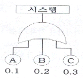
- 0.006
- 0.496
- 0.504
- 0.994
(정답률: 51%)
70. 아이템의 신뢰도가 모두 0.9인 3 out of 4 시스템(4중 3 시스템)의 신뢰도는 얼마인가?
- 0.8106
- 0.9477
- 0.9704
- 0.9999
(정답률: 47%)
71. 재료의 강도는 평균 50kg/mm2이고 표준편차가 2kg/mm2이며, 하중은 45kg/mm2이고 표준편차가 2kg/mm2인 정규분포를 따른 다고 한다. 이 재료가 파괴 될 확률은? (단, u는 표준정규분포의 확률변수이다.)
- Pr(u ＞ -1.77)
- Pr(u ＞ 1.77)
- Pr(u ＞ -2.50)
- Pr(u ＞ 2.50)
(정답률: 50%)
72. 기계 1대를 60시간 동안 연속 사용하는 과정에서 8회의 고장이 발생하였고, 각각의 고장에 대한 수리시간이 다음과 같을 때, MTBF는 몇 시간인가?
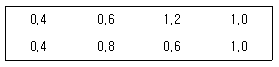
- 6
- 6.5
- 6.75
- 7
(정답률: 35%)
73. 우발고장 기간의 고장률을 감소시키시 위한 대책이 아닌 것은?
- 혹사하지 않도록 한다.
- 주기적인 예방보전을 한다.
- 과부하기 걸리지 않도록 한다.
- 사용상의 과오를 범하지 않게 한다.
(정답률: 58%)
74. 글힘과 같이 신뢰도 R1, R2, R3를 갖는 부품으로 A는 부품 중복(redundancy)을, B는 시스템 중복(redundancy) 을 시켜 설계하였다. A와 B의 신뢰도에 관한 설명으로 맞는 것은?
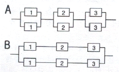
- A와 B의 신뢰도는 일반적으로 차이가 없다.
- A의 신뢰도가 B의 신뢰도보다 일반적으로 높다.
- B의 신뢰도가 A의 신뢰도보다 일반적으로 높다.
- A와 B의 신뢰도는 경우에 라 대소 관계가 다르다.
(정답률: 61%)
75. 평균고장률 λ=0.001/시간인 장치를 100시간 사용하면 신뢰도는 0.9가 된다. 이 장치 2개를 둘 중 어느 하나만 작동하면 기능이 발휘되도록 결합하여 시스템을 구성하였다. 이 스스템을 100시간 사용하였을 때의 신뢰도는?
- 0.81
- 0.9
- 0.95
- 0.99
(정답률: 52%)
76. 가속수면시험은 150℃에서 실시되고, MTBF는 100시간으로 추정되었다. 활성화에너지m3(△H)가 0.25eV이고 가속계수가 4.0이라면 정상동작 온도는 약 얼마인가? (단, 아레니우스모델(Arrheniua Model) 적용, Kelvin 온도=섭씨온도+273, Biltzman 상수=8.617×10-5eV/K이다.)
- 79℃
- 111℃
- 150℃
- 352℃
(정답률: 18%)
77. 시간의 경과에 따라 시스템이나 제품의 기능이 저하되는 고장은?
- 초기고장
- 우발고장
- 파국고장
- 열화고장
(정답률: 63%)
78. 알루미늄 전해 커패시터의 성능 열화에 따은 수명은 와이블 분포를 따른다. 척도모수가 4000시간, 형성모수가 2.0, 위치모수가 0일 때 2000시간에서의 신뢰도는 약 얼마인가?
- 0.5000
- 0.5916
- 0.7788
- 0.8564
(정답률: 44%)
79. 예방보전에 포함되지 않는 것은?
- 고장발견 즉시 교환, 수리
- 주유, 청소, 조정 증의 실시
- 결점을 가진 아이템의 교환 , 수리
- 고장의 징조 또는 결점을 발견하기 위한 시험, 검사의 실시
(정답률: 57%)
80. 1000시간당 고장률이 각각 2.8, 3.6, 10.2, 3.4인 부품 4개를 직렬결합으로 설계한다면 이 기기의 평균수명은 약 얼마인가? (단, 각 부품의 고장밀도함수는 지수분포를 따른다.)
- 50시간
- 98시간
- 277시간
- 357시간
(정답률: 38%)
5과목: 품질경영
81. 사내표준화의 대상이 아닌 것은?
- 방법
- 특허
- 재료
- 기계
(정답률: 62%)
82. 측정시스템에서 안정성(stability)에 대한 설명으로 틀린 것은?
- 안전성은 치우침뿐만 아니라 산포가 커지는 현상도 발생할 수 있다는 점을 유의하여야 한다.
- 안전성 분석방법에서 산포관리도가 관리상태가 아니고 평균관리도가 관리상태일 때, 측정시스템이 더 이상 정확하게 측정할 수 없음을 뜻한다.
- 안정성은 시간이 지남에 따른 종일 부품에 대한 측정 결과의 변동 정도를 의미하며, 시간이 지남에 따라 측정된 결과가 서로 다른 경우 안정성이 결여된 것이다.
- 통계적 안정성은 정기적으로 교정을 하는 측정기의 경우 기준치를 알고 있는 동일 시료를 3~5회 측정한 값을 관리도를 통해 타점헤 가면서 관리선을 벗어나는지 유무로 산포나 치우침이 발생하는지를 체크할 수 있다.
(정답률: 52%)
83. 모티베리션 운동은 그 추진 내용면에서 볼 때 동기 부여형(motivation package)과 부적합 예방형(prevention package)으로 나눈 수 있다. 부적합 예방형 모티베이션 운동에 해당되지 않는 것은?
- 관리자 책임의 부적합품 또는 부적합은 관리자에게 있다.
- 부적합품 또는 부적합을 탐색 추구하는데 있어서 작업자의 협조를 구한다.
- 우수한 작업자의 기술을 습득하고 기술개선을 위한 교육훈련을 실시한다.
- 관리자 책임의 부적합품 또는 부적합이라는 관점에서 작업자의 개선 행위를 추구하고 있다.
(정답률: 55%)
84. 국제표준화기구(ISO)의 설립 목적과 관련이 없는 것은?
- 표준 및 관련 활동의 세계적인 조화를 촉진
- 국가표준이 규정하지 않는 부분의 세부적보완
- 회원기관 및 기술위원회의 작업에 관한 정보교환의 주선
- 국제 표준의 개발, 발간 그리고 세계적으로 사용되도록 조치
(정답률: 53%)
85. A부서의 직접작업비는 500원/시간, 간접비는 800원/시간이며 손실시간이 30분인 경우, 이 부서의 실패비용은 약 얼마인가?
- 333원
- 533원
- 650원
- 867원
(정답률: 58%)
86. 표준화의 적용구조에서 표준화가 주제로 하고 있는 속성을 구분하는 분야를 의미하는 것은?
- 국면
- 수준
- 기능
- 영역
(정답률: 39%)
87. 분임조 활동에서 문제해결을 위한 활동계획의 구립에 대한 셜명 중 틀린 것은?
- 전윈이 참가하여 검토 및 이해한 후 추진한다.
- 활동계획은 5W IH에 의해 세밀하게 작성되어야 한다.
- 전문가에 의뢰하여 계획을 세우는 것이 가장 효과적이다.
- 문제를 세분해서 한하나에 대해 담당자를 정해 각자의 책임하에 추진한다.
(정답률: 55%)
88. 품질경영의 요건에 관한 설명으로 가장 거리가 먼 것은?
- 부품의 품질 향상을 위해 수입검사를 강화해야 한다.
- 품질은 소비자 즉, 고객의 요구를 만족시키는 것이다.
- 고객만족의 효과적 수행을 위해 모든 구성원의 참여가 필요하다.
- 문제 해결을 위해 통계적 수법을 포함하여 다양한 수단의 적용이 요구된다.
(정답률: 58%)
89. X-Rm 관리도에서 k=25인 이동범위 관리도를 작성한 결과 ∑Rm=0.443일 때 공정능력(process capability)을 구하면 약 얼마인가? (단, n=2일 때 d2=1.128이다.)
- 0.0982
- 0.1968
- 0.1110
- 0.2220
(정답률: 17%)
90. 표준의서식과 작성방법(KS A 001:2015)에서 비고, 각주 및 보기에 대한 설명으로 틀린 것은?(오류 신고가 접수된 문제입니다. 반드시 정답과 해설을 확인하시기 바랍니다.)
- 본문에서 각주의 사용은 최소한도에 그쳐야 한다.
- 비고 및 보기는 이들이 언급된 문단 위에 위치하는 것이 좋다.
- 동일 한 절 도는 항에 비고와 보기가 함께 기재되는 경우 비고가 우선한다.
- 각주의 내용이 많아 해당 쪽에 모두 넣기 어려운 경우, 다음 쪽으로 분할하여 배치시켜도 된다.
(정답률: 31%)
91. 품질심사의 심사주체에 따른 분류에 관한 설명으로 틀린 것은?
- 기업에 의한 자체 품질 활동 평가
- 구매자에 의한 협력업체에 대한 품질활동 평가
- 협력업체에 의한 고객사 제품의 품질수준 평가
- 심사기관에 의한 인증 대상기업의 품질활동 평가
(정답률: 47%)
92. 애로우 다이어그램의 장점이 아닌 것은?
- 루프(loop)를 만들 수 있다.
- 계획의 진도 관리가 용이한다.
- 활동의 선후관계가 명확해진다.
- 최소의 비용으로 공기 또는 납기를 단축할 수 있다.
(정답률: 39%)
93. 다음 내용 중 ( )에 들어갈 내용을 순서대로 나열한 것은?
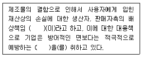
- QC, QA
- PL, PLP
- PL, PLD
- PLD, PLP
(정답률: 64%)
94. A.R Tenner는 고객만족을 충분히 달성하기 위하여 그 단계를 다음과 같이 정의했을 때, [단계2]에 해당하지 않는 것은?
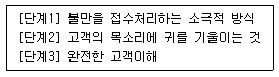
- 소비자 상담
- 소비자 여론 수집
- 판매기록 분석
- 설계, 계획된 조사
(정답률: 47%)
95. 구멍의 치수가 축의 치수보다 작을 때처럼 항상 죔새가 생기는 끼워맟춤 형태는?
- 중간 끼워맟춤
- 억지 끼워맟춤
- 틈새 끼워맟춤
- 헐거운 끼워맟춤
(정답률: 66%)
96. 데이터가 존재하는 범위를 몇 개의 구간으로 나누어 가 구간에 들어가는 데이터의 출현도수를 세어서 도수표를 만든 다으 그것을 도형화한 것은?
- 산점도
- 특성요인도
- 파레토도
- 히스토그램
(정답률: 50%)
97. 협력업체 품질관리의 기능에 대한 설명 중 틀린 것은?
- 협력업체측에서 발주기업 완제품의 품질보증을 위해서 행하는 설계검사 활동
- 발주기업축에서 협력업체 품질의 유지ㆍ향상을 위해서 행하는 품질관리활동
- 발주기업측의 요구품질을 만족하는 협력업체 제품을 받아들이기 위해서 행하는 수입검사활동
- 협력업체측에서 발주기업측이 요구하는 제품을 제조하기 위해서 행하는 품질관리활동
(정답률: 40%)
98. 전략적 경영과정에 있어 전략의 실행(strategy implementation)에 해당되는 활동은?
- 계획을 예산에 반영한다.
- 실행성과를 평가하고 통제한다.
- 기업의 이념과 사명을 확인한다.
- 목표달성을 위한 전략을 수립한다.
(정답률: 42%)
99. 품질비용의 하나인 평가비용에 해당하는 것은?
- 클래임 비용
- 재가공 작업비용
- 업무계획 추진비용
- 계측기 검ㆍ교정 비용
(정답률: 57%)
100. 6 시그마 활동의 추진상에 있어 일반적으로 많이 따르고 있는 DMAIC 체계 중 M 단계의 설명으로 맞는 것은?
- 문제나 프로세스를 개선하는 단계이다.
- 개선할 대상을 확인하고 정의를 하는 단계이다.
- 결함이나 문제가 발생한 장소와 시점, 문제의 형태와 원인을 규명한다.
- 개선할 프로세스와 품질수준을 측정하고 문제에 대한 계량적 규명을 시도한다.
(정답률: 49%)
반면에 처리제곱합(SSA)과 상호작용제곱합(SSAB)의 자유도를 고려하여 F값을 계산하면, SSA/3과 SSAB/6의 비율이 F분포를 따른다. 이때 SSA/3의 값은 11.107, SSAB/6의 값은 1.842이다. 따라서 ㉡의 정답은 11이다.